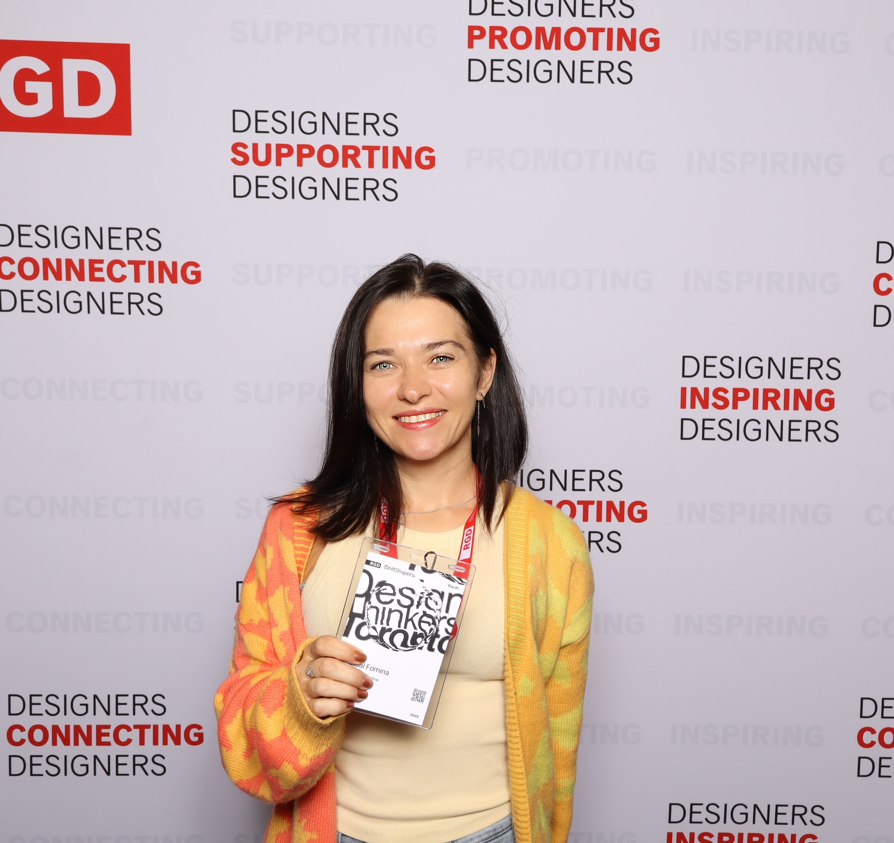
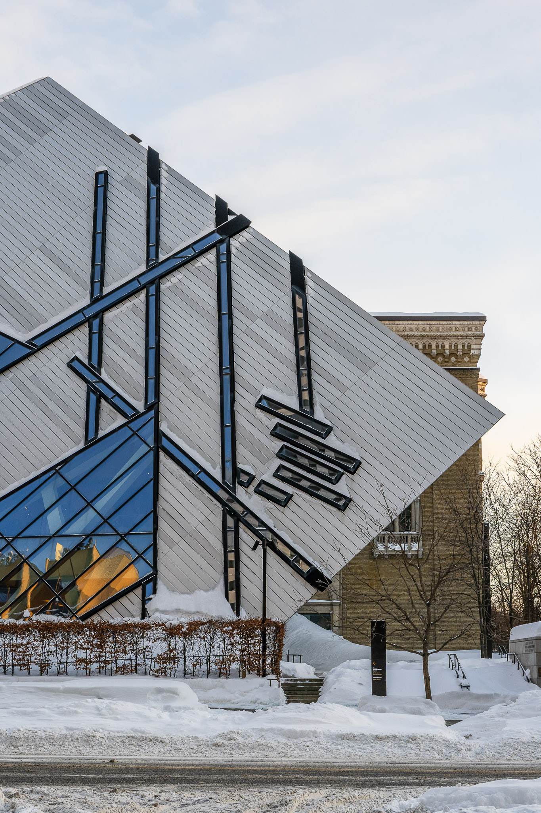
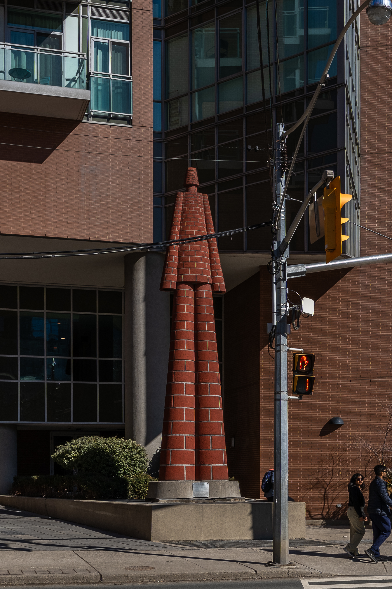
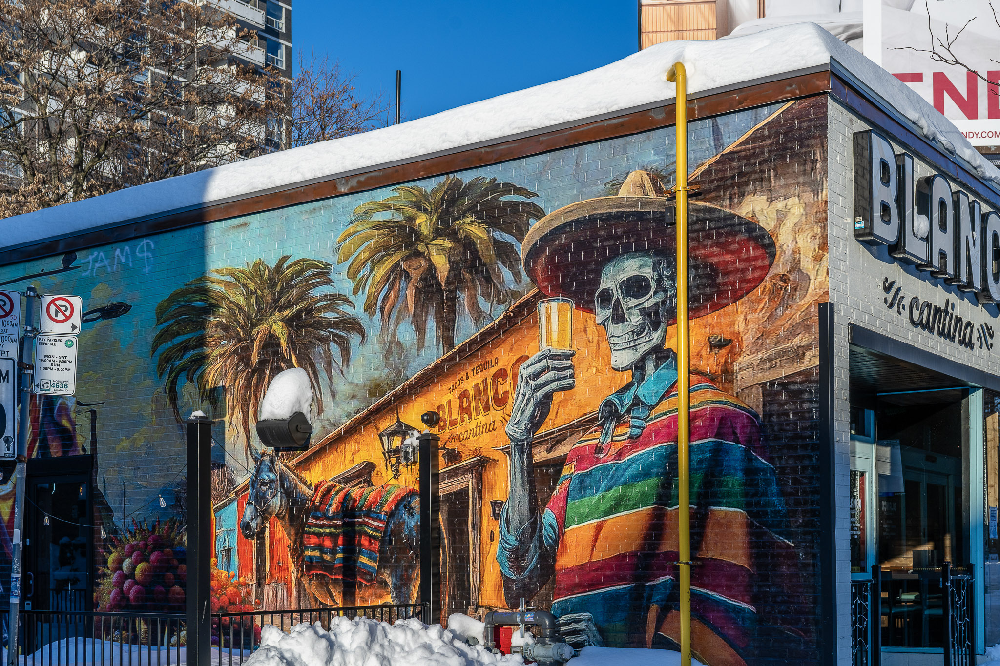

 Typography
Typography

Architecture
Art Objects
Street ArtTrace
the route of Art & Creative Exploration
What is TRACE?
Most city guides tell you where to eat. TRACE tells you what to look at. Discover ghost signs, brutalist architecture, artefacts, and signage most people walk past without noticing.
Mission
Document
Urban art and design before it disappears — ghost signs, murals, and vernacular typography that are part of the city's visual memory.
Connect
Graphic designers, architects, and curious locals with the city's creative fabric in a way generic tourism platforms never could.
Promote
Sustainable, walkable city exploration over mass tourism — neighbourhoods and streetscapes, not landmarks.
Educate
Through designer notes, historical context, and curatorial voice — not dry plaques.
The Five Routes
Routes are multi-select — explore one or layer multiple on the same map!
The Difference
The only platform that…
- Created by a designer, for designers — curatorial voice, not crowd-sourced noise
- Walking route mechanic with genuine editorial depth
- Scavenger hunt on top of city exploration
- Documents ephemeral urban design before it's gone
- Built for walking experience
TRACE Ecosystem
Interactive Web Map
Mapbox-powered mobile-first web app with filterable routes, rich spot detail, and a scavenger hunt mechanic.
City Guide
Editorial long-reads, route walkthroughs, and curated spot collections for deep neighbourhood exploration.
TRACE Zine
Quarterly printed editorial with fold-out map insert — interviews, stories, new discoveries.
Social Media
Follow us on Instagram, Medium, and LinkedIn — for the recent news and new spots!